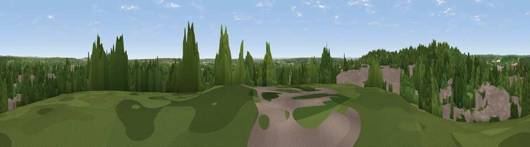

Viewpoint near Reading
#41226 in England · top 46% of its area beats it · near Reading · access?Where it is
The exact computed spot (SU 68775 72825). Click the marker for map links.
Public access: no public right of way or access land is recorded at this exact spot — it may be on private land. Computed from Natural England's CRoW access layer and OpenStreetMap rights of way — not the legal definitive map. Always verify locally.
The view, rendered

A 360° render of this exact spot computed from the terrain model, tree cover and land cover — summer colours, afternoon light, calibrated against photographs of famous viewpoints. Real trees, hedges and buildings will differ in detail.
The panorama
Grey silhouette: terrain skyline in each direction (720 bearings, Earth curvature and refraction included). Dashed green: skyline with trees (+15 m) and buildings (+8 m) as obstacles. Blue strip: how far the ground is visible on each bearing.
Where the view opens
Wedge length = distance to the farthest visible ground on that bearing (vegetation-aware). Rings at 10, 25 and 50 km.
What fills the view
43% woodland · 38% built-up · 17% grassland · 2% cropland ·
Angular shares of the visible panorama (visual magnitude), not map area. Landscape diversity 0.49 (0–1 Shannon).
Key numbers
More beautiful places nearby
The staircase of upgrades: each row has a higher view potential than everything closer. Driving times are estimates from straight-line distance, calibrated against real road routing — check an actual route before setting out.
| Place | Direction | Drive | Score |
|---|---|---|---|
| Viewpoint near Theale | W · 3 km | ~8 min | 31.8 |
| Viewpoint near Mapledurham | NNW · 5 km | ~11 min | 32.0 |
| Viewpoint near Mapledurham | NNW · 6 km | ~12 min | 35.0 |
| Viewpoint near Whitchurch-on-Thames | NW · 7 km | ~15 min | 47.5 |
| Viewpoint near Streatley | NW · 13 km | ~24 min | 57.2 |
| Viewpoint near Moulsford | NW · 15 km | ~26 min | 58.8 |
| Viewpoint near Nuffield | N · 16 km | ~29 min | 62.3 |
| Viewpoint near Compton | WNW · 17 km | ~30 min | 64.1 |
51.45024, -1.01167 · source: screening · position refined by local search. Computed location — check access rights before visiting.